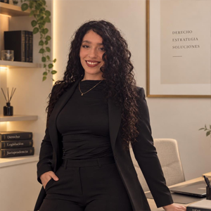

Casos prácticos y encuadre
Entrenamos la lectura veloz del caso planteado en plataforma, la identificación del problema jurídico central y la fundamentación técnica sin contradicciones entre ramas.
Abogada graduada en la Universidad Siglo 21 tras rendir y aprobar personalmente los mismos exámenes integradores EFIP 1 y EFIP 2 para los que hoy prepara a futuros colegas.

Dra. Sabrina Gentile · Abogada UES21
Defensa oral EFIP 1 y EFIP 2No te prepara un comentarista externo: te entrena una colega que se sentó frente al mismo tribunal evaluador de la Siglo 21, defendió el temario bajo presión y obtuvo su título de Abogada.
100% Enfoque UES21Práctica real de oratoria jurídica: simulacros cronometrados con devolución técnica sobre vocabulario, postura y encuadre normativo.
Aprobar el Examen Final Integrador Presencial exige abandonar la lectura fragmentada y pensar como jurista. En nuestro estudio trabajamos el derecho como un sistema coherente donde cada artículo dialoga con la doctrina.
Después de acompañar a cientos de alumnos, Sabrina rindió personalmente sus propias instancias integradoras en la Universidad Siglo 21 y se graduó como Abogada. Conoce cada giro de pregunta del tribunal porque lo vivió en carne propia.
Aprobados en primera persona bajo el reglamento y rúbrica oficial de la Universidad Siglo 21.
Bibliografía clásica y códigos comentados sistematizados en mapas de defensa oral.
Estudiantes de todo el país que aprobaron su defensa oral con solvencia argumentativa.
Ningún resumen anónimo reemplaza a las obras maestras del derecho argentino. Recorré nuestra biblioteca en movimiento y seleccioná cada tratado para explorar las preguntas reales de mesa examinadora.
Carrusel bibliográfico en movimiento: pasá el cursor para detener la marcha o hacé clic sobre cualquier tomo para abrir su ficha técnica.
Filtrá por instancia o seleccioná una obra para revisar cómo traducimos la doctrina clásica a una respuesta oral de dos minutos frente al tribunal.
Título Preliminar del Código Civil y Comercial (arts. 1 a 18), constitucionalización del derecho privado, persona humana, capacidad de ejercicio, hechos y actos jurídicos, vicios de la voluntad (error, dolo, violencia) y vicios propios del acto jurídico (lesión, simulación y fraude).
«Relacione el abuso del derecho del artículo 10 del CCyCN con el principio de buena fe del artículo 9, distinga la acción de simulación de la acción de declaración de inoponibilidad por fraude y explique sus efectos frente a terceros subadquirentes de buena fe y a título oneroso.»
Abrí tu exposición ubicando el instituto en el Título Preliminar antes de recitar requisitos aislados. Cuando el tribunal advierte que diferenciás con nitidez un vicio de la voluntad (que ataca la intención o libertad) de un vicio del acto jurídico (que vulnera la buena fe o el orden público), la defensa fluye a tu favor.
Entrenamos la lectura veloz del caso planteado en plataforma, la identificación del problema jurídico central y la fundamentación técnica sin contradicciones entre ramas.
Escuchar cómo otro compañero defiende un eje bajo la corrección en vivo de la Dra. Gentile multiplica tu repertorio de respuestas ante preguntas cruzadas.
El mayor obstáculo del estudiante de Abogacía en el EFIP no es la falta de lectura, sino la dispersión. Nuestro método integra los ejes troncales en una única estructura de argumentación oral.
Evaluamos tu base actual sobre el programa vigente de la Universidad Siglo 21, detectamos lagunas conceptuales y ordenamos un cronograma realista hasta la fecha de tu mesa.
Trabajamos cada sub-eje con el Código en mano y los tratados clásicos sintetizados, aprendiendo a definir cada figura por su naturaleza jurídica, requisitos y efectos.
Practicás tu exposición oral bajo interrogatorio real de examen, puliendo muletillas, tiempos de respuesta y capacidad de relacionar materias cuando el tribunal repregunta.
Cada semana recibimos las actas y mensajes de estudiantes que rindieron EFIP 1 y EFIP 2 en Córdoba y sedes de todo el país, alcanzando su graduación como Abogados.
| Instancia evaluada | Ejes troncales defendidos ante tribunal | Modalidad cursada | Resultado en acta |
|---|---|---|---|
| EFIP 1 · Mesa Presencial | Control de constitucionalidad, nulidades de los actos jurídicos y presupuestos procesales | Mentoría Individual + Simulacro | Aprobado con distinción |
| EFIP 2 · Graduación Abogacía | Factores de atribución en responsabilidad civil, teoría del delito e indemnización art. 245 LCT | Plan Intensivo hasta Rinde | Aprobado · Nueva Abogada |
| EFIP 1 · Recuperación Oral | Contratos de consumo, pacto comisorio expreso y recursos procesales ordinarios | Comisión Reducida + Oratoria | Aprobado en 1.ª defensa |
| EFIP 2 · Mesa Integradora | Régimen patrimonial del matrimonio, legítima hereditaria e inoponibilidad societaria | Mentoría Individual Dra. Gentile | Aprobado · Nuevo Abogado |
Elegí la modalidad que mejor se adapte a tu ritmo de estudio. Todos los programas incluyen material actualizado al programa vigente de la Universidad Siglo 21 y seguimiento directo de la Dra. Sabrina Gentile.
Preparación grupal reducida para EFIP 1 o EFIP 2
Entrenamiento personalizado mano a mano con la Dra. Gentile
Recta final y simulacro integral para quienes rinden en semanas
Despejá las dudas más habituales sobre tiempos de estudio, bibliografía incluida y modalidad de los simulacros orales para EFIP 1 y EFIP 2.
Porque la Dra. Sabrina Gentile no sólo enseña el programa desde hace años: ella misma rindió y aprobó personalmente el EFIP 1 y el EFIP 2 en la Universidad Siglo 21 para graduarse como Abogada. Conoce desde adentro la dinámica exacta del examen escrito y oral, los criterios de evaluación del tribunal y cómo manejar los nervios en esa instancia decisiva.
Todo el material bibliográfico, los cuadros sinópticos de doctrina clásica (Rivera, Bidart Campos, Lorenzetti, Palacio, Pizarro, Lascano, Grisolia y Nissen) y las guías actualizadas al Código Civil y Comercial están incluidos dentro de tu preparación, listos para estudiar sin perder semanas recopilando textos.
Lo ideal es iniciar entre 6 y 10 semanas antes de tu mesa para asimilar cada eje con madurez doctrinaria y practicar múltiples defensas orales. Si tu fecha está más próxima, contamos con la Clínica de Tribunal para focalizar de inmediato en los núcleos más evaluados.
Sí, es el corazón de nuestro estudio. Entrenamos la estructura del discurso jurídico desde la primera semana para que aprendas a iniciar cada tema con un marco conceptual claro, administrar los silencios y responder repreguntas con serenidad profesional.
Escribinos directamente por WhatsApp indicando si vas a rendir EFIP 1 o EFIP 2 y qué fecha aproximada tenés en mente. La Dra. Sabrina Gentile analizará tu situación académica y te indicará el camino más efectivo para aprobar.